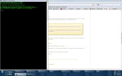

|
This page last changed on Feb 20, 2011 by queuf.
Hello,
I am trying to install OpenRemote-2.0.0_DeveloperRelease11 on Windows XP, but I am having some problems ...
I followed the instructions found here: http://openremote.org/display/docs/OpenRemote+2.0+Controller+Installation
So I installed Java Development Kit 6.21
I set the environment variable
but I still have the following message when I type "F: \> OpenRemote-2.0.0_DeveloperRelease11 \ bin \ openremote run"
"The CATALINA_HOME environment variable is not defined Correctly
This Environment Variable is Needed you run this program "

Tell me what I missed, thank you in advance
Franck
|
Hi,
- I think you have CATALINA_HOME defined in your environment and it does not point to "F:\OpenRemote-2.0.0_DeveloperRelease11", don't you? Try to erase it if you do not need it for other Tomcat.
- You followed instructions 'Enter "JAVA_HOME" as variable name and path to root of the Java Runtime directory (installed in step 1) as the value'. I think this should be in fact JDK directory, so in your case set JAVA_HOME=C:\Program File\Java\jdk1.6.0_21
Fekete

Posted by fekete kamosh at Feb 21, 2011 20:08
|
|
ok, thanks, it works now !
I have designed a few panels for iPad and iPhone in the designer, and I have sync from the controller
I have the openremote app on my iPhone and upload my panels, it works
and in the app on my iPhone, I added the IP of my computer to sync with, the sync works the first time, but I have only a blackscreen with the tab bar, I can't see my background and the two buttons on it. so I have made some changes on the designer, resync the controller, but in the app there is no change, and no way to see again the settings window, where can I find the settings and modify them ?
another question:
will I have to repeat the entire process with "openremote run" at any time I want to sync ? is there a way to simplify this handling because it is not very practical ...except let the cmd window open ? also I have a NAS (Synology DS1010+), is it possible to install the controller on it ?
sorry for my stupid questions...I am a real newbie...
thanks
Franck
Posted by queuf at Feb 21, 2011 21:11
|
|
Hi,
I have somme problem with the Controller, I have the following message when I try to sync: "Sync failed! null"
here is what appears in the command window:
"Microsoft Windows XP [version 5.1.2600]
(C) Copyright 1985-2001 Microsoft Corp.
C:\Documents and Settings\Administrateur\OpenRemote-2.0.0_DeveloperRelease11\bin
>openremote run
Using CATALINA_BASE: C:\Documents and Settings\Administrateur\OpenRemote-2.0.0
_DeveloperRelease11
Using CATALINA_HOME: C:\Documents and Settings\Administrateur\OpenRemote-2.0.0
_DeveloperRelease11
Using CATALINA_TMPDIR: C:\Documents and Settings\Administrateur\OpenRemote-2.0.0
_DeveloperRelease11\temp
Using JRE_HOME: C:\Program Files\Java\jdk1.6.0_21
26 fÚvr. 2011 16:54:51 org.apache.catalina.core.AprLifecycleListener init
INFO: The APR based Apache Tomcat Native library which allows optimal performanc
e in production environments was not found on the java.library.path: C:\Document
s and Settings\Administrateur\OpenRemote-2.0.0_DeveloperRelease11\webapps\contro
ller\WEB-INF\lib\native
26 fÚvr. 2011 16:54:51 org.apache.coyote.http11.Http11Protocol init
INFO: Initialisation de Coyote HTTP/1.1 sur http-8080
26 fÚvr. 2011 16:54:51 org.apache.catalina.startup.Catalina load
INFO: Initialization processed in 287 ms
26 fÚvr. 2011 16:54:51 org.apache.catalina.core.StandardService start
INFO: D´┐¢marrage du service Catalina
26 fÚvr. 2011 16:54:51 org.apache.catalina.core.StandardEngine start
INFO: Starting Servlet Engine: Apache Tomcat/6.0.18
------------ CALIMERO PATCH A ------------------------
------------ CALIMERO PATCH A ------------------------
26 fÚvr. 2011 16:54:52 org.apache.coyote.http11.Http11Protocol start
INFO: D´┐¢marrage de Coyote HTTP/1.1 sur http-8080
26 fÚvr. 2011 16:54:52 org.apache.catalina.startup.Catalina start
INFO: Server startup in 1479 ms
[Controller]2011-02-26 16:55:55,468 ERROR [HTTP-Thread-1] org.openremote.control
ler.utils.ZipUtil.unzip(73) | Can't unzip file to ..\webapps\controller\BOUTONSa
lleCin??1298585712041.png
java.io.FileNotFoundException: ..\webapps\controller\BOUTONSalleCin??12985857120
41.png (Syntaxe du nom de fichier, de rÚpertoire ou de volume incorrecte)
at java.io.FileOutputStream.open(Native Method)
at java.io.FileOutputStream.<init>(FileOutputStream.java:179)
at java.io.FileOutputStream.<init>(FileOutputStream.java:131)
at org.apache.commons.io.FileUtils.openOutputStream(FileUtils.java:179)
at org.apache.commons.io.FileUtils.touch(FileUtils.java:220)
at org.openremote.controller.utils.ZipUtil.unzip(ZipUtil.java:63)
at org.openremote.controller.utils.ZipUtil.unzip(ZipUtil.java:93)
at org.openremote.controller.service.impl.FileServiceImpl.writeZipAndUnz
ip(FileServiceImpl.java:111)
at org.openremote.controller.service.impl.FileServiceImpl.downloadOpenre
moteZipFromBeehiveAndUnzip(FileServiceImpl.java:174)
at org.openremote.controller.service.impl.FileServiceImpl.syncConfigurat
ionWithModeler(FileServiceImpl.java:158)
at org.openremote.controller.action.ConfigManageController.syncOnline(Co
nfigManageController.java:93)
at sun.reflect.NativeMethodAccessorImpl.invoke0(Native Method)
at sun.reflect.NativeMethodAccessorImpl.invoke(NativeMethodAccessorImpl.
java:39)
at sun.reflect.DelegatingMethodAccessorImpl.invoke(DelegatingMethodAcces
sorImpl.java:25)
at java.lang.reflect.Method.invoke(Method.java:597)
at org.springframework.web.servlet.mvc.multiaction.MultiActionController
.invokeNamedMethod(MultiActionController.java:434)
at org.springframework.web.servlet.mvc.multiaction.MultiActionController
.handleRequestInternal(MultiActionController.java:372)
at org.springframework.web.servlet.mvc.AbstractController.handleRequest(
AbstractController.java:153)
at org.springframework.web.servlet.mvc.SimpleControllerHandlerAdapter.ha
ndle(SimpleControllerHandlerAdapter.java:45)
at org.springframework.web.servlet.DispatcherServlet.doDispatch(Dispatch
erServlet.java:806)
at org.springframework.web.servlet.DispatcherServlet.doService(Dispatche
rServlet.java:736)
at org.springframework.web.servlet.FrameworkServlet.processRequest(Frame
workServlet.java:396)
at org.springframework.web.servlet.FrameworkServlet.doPost(FrameworkServ
let.java:360)
at javax.servlet.http.HttpServlet.service(HttpServlet.java:637)
at javax.servlet.http.HttpServlet.service(HttpServlet.java:717)
at org.apache.catalina.core.ApplicationFilterChain.internalDoFilter(Appl
icationFilterChain.java:290)
at org.apache.catalina.core.ApplicationFilterChain.doFilter(ApplicationF
ilterChain.java:206)
at org.springframework.web.filter.CharacterEncodingFilter.doFilterIntern
al(CharacterEncodingFilter.java:78)
at org.springframework.web.filter.OncePerRequestFilter.doFilter(OncePerR
equestFilter.java:77)
at org.apache.catalina.core.ApplicationFilterChain.internalDoFilter(Appl
icationFilterChain.java:235)
at org.apache.catalina.core.ApplicationFilterChain.doFilter(ApplicationF
ilterChain.java:206)
at org.apache.catalina.core.StandardWrapperValve.invoke(StandardWrapperV
alve.java:233)
at org.apache.catalina.core.StandardContextValve.invoke(StandardContextV
alve.java:191)
at org.apache.catalina.core.StandardHostValve.invoke(StandardHostValve.j
ava:128)
at org.apache.catalina.valves.ErrorReportValve.invoke(ErrorReportValve.j
ava:102)
at org.apache.catalina.core.StandardEngineValve.invoke(StandardEngineVal
ve.java:109)
at org.apache.catalina.connector.CoyoteAdapter.service(CoyoteAdapter.jav
a:286)
at org.apache.coyote.http11.Http11Processor.process(Http11Processor.java
:845)
at org.apache.coyote.http11.Http11Protocol$Http11ConnectionHandler.proce
ss(Http11Protocol.java:583)
at org.apache.tomcat.util.net.JIoEndpoint$SocketProcessor.run(JIoEndpoin
t.java:354)
at java.util.concurrent.ThreadPoolExecutor$Worker.runTask(ThreadPoolExec
utor.java:886)
at java.util.concurrent.ThreadPoolExecutor$Worker.run(ThreadPoolExecutor
.java:908)
at java.lang.Thread.run(Thread.java:619)"
it seems that I have a problem here:
"INFO: The APR based Apache Tomcat Native library which allows optimal performanc
e in production environments was not found on the java.library.path: C:\Document
s and Settings\Administrateur\OpenRemote-2.0.0_DeveloperRelease11\webapps\contro
ller\WEB-INF\lib\native"
what can I do ?
I also have problem when I use my iphone with openremote app, the app starts but show only a blackscreen with the tab bar, I can't see my background and the two buttons on it...and I can't access to the app settings. Is someone have any idea of what is going on...
I really want to use openremote because I have KNX at home, and I really like the idea of controlling home and video devices at the same time, but it is so hard to make it works that I don't know if I will continue this way, especially if I can not find the info I need to move forward. Please help !
thanks in advance
Franck
Posted by queuf at Feb 26, 2011 16:32
|
|
My problem with the controller is now resolved, I had a button with a french character: "é". I can now sync with the controller.
but I have another question:
The controller is on my desktop computer, with the IP 192.168.1.2;I went in my Netgear Router, and open the 8080 port
in the app settings, the controller is discovered ("http://192.168.1.2:8080/controller"), I can choose my panel, but when I select "Done", it says "Update Failed OpenRemote Controller not found on the configured URL. See 'Settings' to reconfigure."
But I don't know what to reconfigure...any idea ?
Thanks
Franck
Posted by queuf at Feb 27, 2011 21:30
|
|
Hi Franck,
If you look in the controller.log you should see some info when your device logs on to the controller to download the panel. Do you see any errors here?
Regards,
Ernst
( I just realized something try to clean your cache or remove to previous synced panel. If the french character is somewhere left behind it could cause some troubles)
Posted by kide at Mar 01, 2011 10:35
|
|
Thanks Ernst,
every thing is allright now; my computer was not working so well, so I have install windows again, from XP to Seven, and I can sync with controller and see my entire interface on my iPhone.
in fact, the french character was the problem and every time I was making sync, the problem re appears; I had to rebuilt a new panel.
thanks for your help
Franck
Posted by queuf at Mar 01, 2011 18:39
|
|
Ok great to hear that your setup is working now.
Regarding the french character: i think you found a bug in the composer/controller and i would suggest you to report the bug to juha<at>openremote<dot>org
Posted by kide at Mar 02, 2011 07:35
|
|
OK, I will report it to Juha
Thanks Ernst !
Posted by queuf at Mar 02, 2011 08:34
|
|
Consider it reported.
The character sets are indeed a bit tricky, and I was just looking at it recently – we're dealing with UTF-16 in Java Strings (that's good), UTF-8 in XML files (or should be, I've been trying to fix these after contractors were messing them up), ISO Latin-1 when it comes to HTTP headers and some charset I haven't checked in the database.
Long story short, conversions do get messed up (or plain broken) at times.
As part of my spring-cleaning effort I am hoping to address these systematically (via unit testing) but the amount of work involved is probably going to take me until spring 2012.
In the meanwhile, patches for individual charset issues are more than welcome. And in the meantime, restricting yourself to Latin-1 is recommended.
Thanks,
– Juha
Posted by juha at Mar 02, 2011 12:28
|
|
The error is this:
java.io.FileNotFoundException: ..\webapps\controller\BOUTONSalleCin??12985857120
(BOUTONSalleCin?? is not getting properly escaped/converted)
And the error trace is below, if somebody wants to get into the code and send a patch:
at java.io.FileOutputStream.open(Native Method)
at java.io.FileOutputStream.<init>(FileOutputStream.java:179)
at java.io.FileOutputStream.<init>(FileOutputStream.java:131)
at org.apache.commons.io.FileUtils.openOutputStream(FileUtils.java:179)
at org.apache.commons.io.FileUtils.touch(FileUtils.java:220)
at org.openremote.controller.utils.ZipUtil.unzip(ZipUtil.java:63)
at org.openremote.controller.utils.ZipUtil.unzip(ZipUtil.java:93)
at org.openremote.controller.service.impl.FileServiceImpl.writeZipAndUnzip(FileServiceImpl.java:111)
at org.openremote.controller.service.impl.FileServiceImpl.downloadOpenremoteZipFromBeehiveAndUnzip(FileServiceImpl.java:174)
at org.openremote.controller.service.impl.FileServiceImpl.syncConfigurationWithModeler(FileServiceImpl.java:158)
at org.openremote.controller.action.ConfigManageController.syncOnline(ConfigManageController.java:93)
Posted by juha at Mar 02, 2011 13:14
|
|
{kind=link}
{kind=link}
{kind=link}
{kind=link}